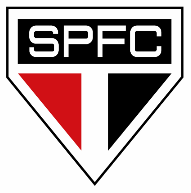

O São Paulo Futebol Clube, fundado em 25 de janeiro de 1930, nasceu da união de sonhos e paixões de torcedores e idealistas que queriam ver sua cidade ter um time à altura de sua grandeza, e ao longo das décadas se tornou símbolo de resistência, glórias e orgulho inigualável, carregando em cada vitória e cada derrota a história viva de uma nação apaixonada pelo futebol.
| Adversário | Local | Data | Horários | |
| Bahia | Morumbi | 16/08/2025 | 21:00 | |
| Vasco | São Januário | 24/08/2025 | 16:00 | |
| Athlético Paranaense | Morumbi | 27/08/2025 | 21:30 |